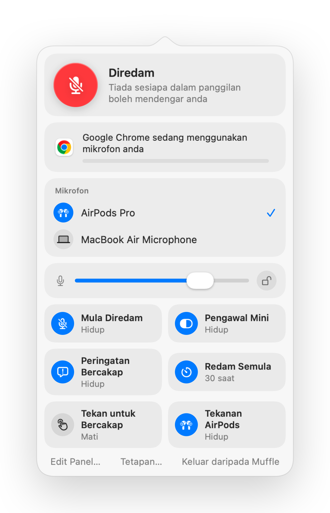

Cara meredam mikrofon anda pada Mac
Tiada kekunci redam untuk mikrofon pada Mac. Bergantung pada aplikasi dan situasi, anda mempunyai beberapa pilihan, dan hanya sebahagian daripadanya berfungsi di mana-mana.
Pilihan anda
- 1
Butang atau pintasan aplikasi panggilan itu sendiri. Ia hanya berfungsi dalam aplikasi tersebut, dan hanya apabila aplikasi itu berada di hadapan.
- 2
Tetapan Sistem, Bunyi, Input. Menyeret tahap input ke sifar bukanlah redam sebenar pada semua mik, dan aplikasi boleh menaikkannya semula.
- 3
Pintasan global dengan Muffle. Satu kekunci meredam mikrofon itu sendiri, dalam setiap aplikasi.
- 4
AirPods anda. Dengan Muffle, menekan tangkai meredam sebarang panggilan persidangan, termasuk Google Meet dalam Chrome.

- Ikon bar menu Muffle bertukar menjadi merah semasa mik dimatikan, tidak kira aplikasi apa yang anda gunakan.
- Keluar daripada Muffle sentiasa mengaktifkan semula mikrofon anda.
Soalan lazim
Adakah terdapat fungsi redam mikrofon terbina dalam pada Mac?
Bukan untuk seluruh sistem. macOS hanya meredam mik dalam aplikasi yang menyokongnya. Muffle menambah fungsi redam menyeluruh sistem yang sebenar.
Adakah meredam dalam Muffle meredam semua aplikasi?
Ya. Muffle mematikan setiap mikrofon pada peringkat perkakasan, jadi tiada aplikasi yang boleh mendengar anda sehingga anda nyahredam.